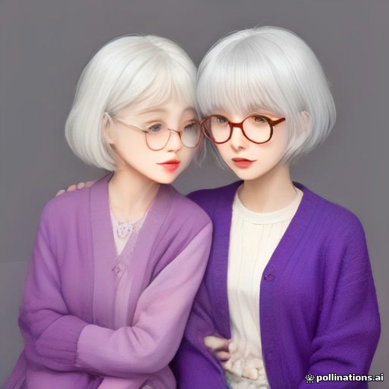
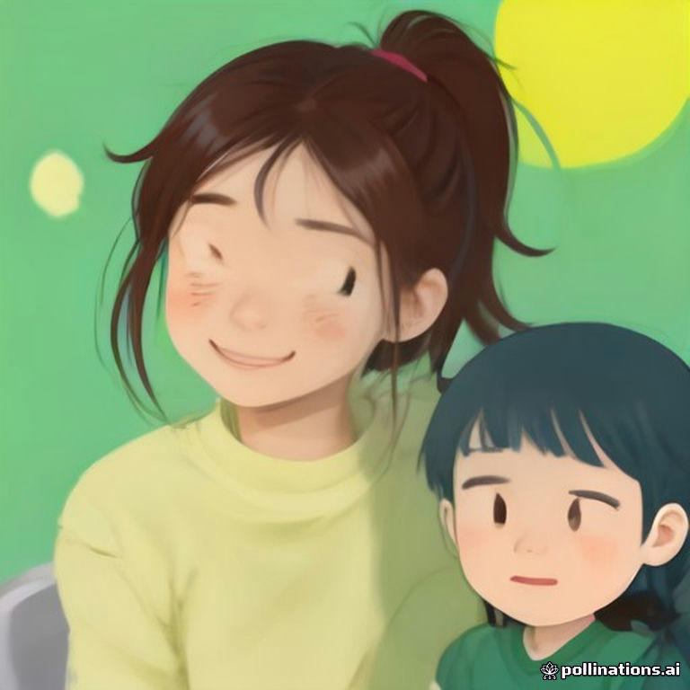
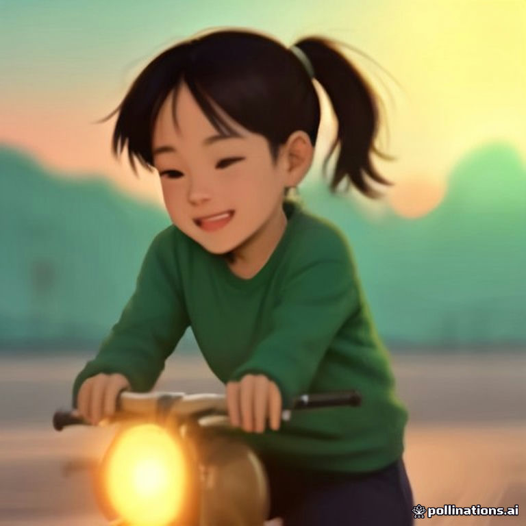

일기 아침에 출근하자마자 키보드에 커피를 쏟았다. 노트북이 꺼지면서 오후 발표 자료가 다 날아간 것 같아 식은땀이 났다. 다행히 팀장님이 어제 공유 폴더에 올려 둔 백업 파일을 찾아 주셨다. 발표는 무사히 끝났고 다들 박수를 쳐 줬다.
정답 사건 커피를 쏟음 / 발표 자료가 날아감 / 팀장이 백업 파일을 찾아 줌 / 발표를 무사히 마치고 박수받음
주인공 특징 검은 네모 안경, 파란 셔츠
제목 커피와 발표 · character 30대 남자, 짧은 머리, 검은 네모 안경, 파란 셔츠
| 컷 | 해설 | 대사 | 장면 |
|---|---|---|---|
| 1 | 출근하자마자 커피를 쏟았다. | 아! 덥실...? | Man spilling coffee over his keyboard, surprised face, office desk cluttered, laptop shutting down, close-up of dripping coffee |
| 2 | 발표 자료가 날아간 기분이었어. | 이게 맞는 거야? | Man looking worried at closed laptop, sweat droplet on forehead, desk with empty slides on monitor, gray office background |
| 3 | 팀장님이 백업 파일을 찾아 주셨다. | 여기 있어! 아! | Manager arriving, pointing at shared folder on screen, man looking relieved, office background, computer glow |
| 4 | 발표는 무사히 끝났네! | 감사합니다! | Man giving presentation, audience clapping, bright smile, office conference room, motivational atmosphere |
일기 비가 그친 오후에 강아지 콩이랑 산책을 나갔다. 콩이가 갑자기 흙탕물 웅덩이로 뛰어들었다. 말리려다 나까지 미끄러져서 둘 다 진흙투성이가 됐다. 집에 와서 같이 목욕하고 나니 콩이가 내 무릎에서 잠들었다.
정답 사건 강아지와 산책 / 강아지가 웅덩이에 뛰어듦 / 둘 다 진흙투성이 / 같이 목욕 후 강아지가 잠듦
주인공 특징 긴 생머리, 노란 우비
제목 강아지와 진흙 소동 · character 20대 여성, 긴 생머리, 노란 우비, 청바지, 미소 짓는 눈
| 컷 | 해설 | 대사 | 장면 |
|---|---|---|---|
| 1 | 비가 그친 오후, 산책을 가요 | 오늘도 산책 즐거워요! | full body shot of woman walking with puppy in a park, sunny, slight breeze, smiling, holding leash |
| 2 | 콩이가 땅탕물에 잠수! | 애~ 도망 좀! | close up of puppy jumping into a muddy puddle, splash, woman surprised, both laughing |
| 3 | 진흙 투성이, 나도 신세 | 이거 진짜 싫다! | woman slipping on mud, puppy licks her sweat, both covered in mud, exasperated frown, chair nearby |
| 4 | 마지막은 포근한 꿈 | inside house, woman and puppy taking a bath, water splashing, puppy on knee, both relaxed, puppy sleeping |
일기 저녁에 성가대 연습이 있었는데 악보를 집에 두고 왔다. 옆자리 집사님이 악보를 같이 보자고 하셔서 나란히 앉아 불렀다. 그런데 내가 높은 음에서 삑사리를 내는 바람에 다 같이 웃음이 터졌다. 연습 끝나고 다 같이 붕어빵을 사 먹었다.
정답 사건 악보를 두고 옴 / 옆 사람과 악보를 같이 봄 / 높은 음에서 실수해 다 같이 웃음 / 연습 후 붕어빵을 먹음
주인공 특징 동그란 안경, 보라색 카디건
제목 성가대 웃음 · character 50대 여성, 흰머리 단발, 동그란 금테 안경, 보라색 카디건 착용, 납득한 눈빛
| 컷 | 해설 | 대사 | 장면 |
|---|---|---|---|
| 1 | 연습이 끝나고 악보를 놓고 왔어요 | late evening church hall, main character with sheet left on table, slight frown, others busy, wide angle | |
| 2 | 집사님이 같이 보자고 제안 | 같이 봐요? | neighbor priest with friendly smile offers to look at sheet together, main character nodding, close up on hands |
| 3 | 내서 높은 음이 웃음을 자아냈다 | 아아앗… | they sit side by side, main character hits high note, expression shocked, others burst into laughter, close up |
| 4 | 연습 후 붕어빵을 먹었어요 | 맛있어요! | group shares 붕어빵 around table, main character smiles, everyone cheerful, moderate shot |

일기 장보기 목록을 냉장고에 붙여 둔 채 마트에 갔다. 기억을 더듬어 카트를 가득 채웠다. 집에 와서 목록을 보니 정작 제일 필요했던 우유만 빠져 있었다. 결국 슬리퍼를 신고 편의점까지 다시 뛰어갔다.
정답 사건 목록을 두고 마트에 감 / 기억으로 장을 봄 / 우유만 빠진 걸 알게 됨 / 편의점에 다시 감
주인공 특징 곱슬머리, 회색 후드티
제목 마지막 우유 구출!! · character 40대 남자, 곱슬 머리, 회색 후드티, 평범한 사무실복
| 컷 | 해설 | 대사 | 장면 |
|---|---|---|---|
| 1 | 장보기 목록을 냉장고에 붙여두고 매트에 갔다 | 잘 챙겨야지! | Middle-aged man in gray hoodie, carrying a grocery cart full of items, determined look, supermarket aisle, bright fluorescent lighting |
| 2 | 집에 와서 목록을 보니 우유가 빠져 있었다 | 어디 갔지? | The same man at home, looking at his empty fridge, confused facial expression, living room with refrigerator visible |
| 3 | 슬리퍼를 신고 편의점까지 다시 뛰어갔다 | 지금 바로! | Man in a worn shirt, wearing slippers, sprinting down the street to convenience store, feet barely touching ground, cars zipping by |
| 4 | 결국 우유를 구해왔다! | 생각보다 쉽다! | Man at convenience store, holding a carton of milk triumphantly, relieved smile, cashier behind counter, other customers watching |
일기 공원에서 딸아이에게 처음으로 두발자전거를 가르쳤다. 뒤를 잡아 주다 손을 놓자마자 아이가 넘어져서 울었다. 반창고를 붙여 주고 한 번만 더 해 보자고 달랬다. 해 질 무렵에는 아이 혼자서 공원 한 바퀴를 돌았다.
정답 사건 딸에게 자전거를 가르침 / 손을 놓자 넘어져 욺 / 반창고를 붙이고 달램 / 아이 혼자 한 바퀴를 돎
주인공 특징 포니테일, 초록색 맨투맨
제목 첫 자전거 도전 · character 32세 엄마, 포니테일 머리, 초록색 맨투맨, 차분한 표정
| 컷 | 해설 | 대사 | 장면 |
|---|---|---|---|
| 1 | 공원에서 딸아이에게 자전거를 가르쳤다 | 이렇게 하면 돼요! | Mother kneeling beside child on grass, gently holding bike handle, smiling, park background, close-up of hands |
| 2 | 손을 놓자마자 아이가 넘어져 울었다 | 아이고! | Mother releases hand, child loses balance, falls onto grass, mom shocked expression, soft sunlight |
| 3 | 반창고를 붙여 주고 한 번 더 해 보자고 달랬다 | 다시 해볼래? | Mom is applying a Band-Aid on child's forehead, encouraging smile, child nodding, sun low overhead |
| 4 | 해 질 무렵에는 아이 혼자서 공원 한 바퀴를 돌았다 | Child pedaling alone, mother cheering from sidelines, evening with golden sunset, child smiling triumphant |


일기 친구랑 북한산에 올랐다. 중턱에서 다리가 너무 아파 그냥 내려가자고 했다. 친구가 가방에서 초콜릿을 꺼내 주면서 조금만 더 가자고 했다. 정상에서 본 노을이 너무 예뻐서 올라오길 잘했다고 생각했다.
정답 사건 친구와 등산 / 중턱에서 포기하고 싶어 함 / 친구가 초콜릿을 주며 격려 / 정상에서 노을을 봄
주인공 특징 빨간 모자, 주황색 바람막이
제목 북한산에서 초콜릿과 노을 · character 20대 남성, 빨간 등산 모자, 주황색 바람막이, 끊임없는 웃음
| 컷 | 해설 | 대사 | 장면 |
|---|---|---|---|
| 1 | 친구와 함께 북한산을 올라갔어요. | 오늘도 기분이 좋다! | Young man climbing 북한산, confident stride, sun rising, forest path, camera at his side |
| 2 | 중턱에서 다리가 아파 내려가자고 했죠. | 이거 참 아프다! | Midway, he grimaces, clutching his leg, leans on a tree, friend reassuring, wide view of trail |
| 3 | 친구가 초콜릿을 꺼내며 더 가자고 했어요. | 다행히 초콜릿이 있네! | Friend pulls out a chocolate from bag, offers to him, he smiles, chocolate in hand, bright hillside |
| 4 | 정상에서 예쁜 노을을 보며 올라오길 좋았어요. | 아름다워! | At summit, panoramic sunset, them standing together, arms around each other, breathtaking view, sunrise glow |
일기 엄마 생신이라 처음으로 케이크를 직접 구웠다. 오븐 온도를 잘못 맞춰서 시트가 새까맣게 탔다. 급하게 빵집에서 시트를 사 와서 생크림과 딸기로 꾸몄다. 엄마가 세상에서 제일 맛있는 케이크라며 웃으셨다.
정답 사건 엄마 생신 케이크를 구움 / 시트가 탐 / 빵집 시트로 다시 꾸밈 / 엄마가 기뻐함
주인공 특징 양갈래 머리, 분홍색 앞치마
제목 생크림 케이크 · character 10대 여자 양갈래 머리, 분홍 앞치마
| 컷 | 해설 | 대사 | 장면 |
|---|---|---|---|
| 1 | 엄마 생신, 내가 케이크를 만들었어! | 와, 오늘은 꼭 잘 만들자! | young teen baker holding a tray of batter, excited smile, kitchen background, oven door open, she looks eager |
| 2 | 오븐 온도 두고 빵이 새까맣게 타 버렸다 | 아니!! 좀 너무 뜨거웠어! | teenager turns on oven, alarm blares, she frowns as the baking sheet turns black, smoke rises |
| 3 | 빵집에서 새 시트를 사 와서 꾸몄어 | 이제 이렇게 마무리! | teenager hurrying through a bakery, buying a new sheet, back to kitchen, adding whipped cream and strawberries |
| 4 | 엄마가 ‘세상에서 제일 맛있다’며 웃으셨다 | 감사합니다! | mom smiles at the colorful cake, takes a bite, delighted expression, mom and teen share the moment |
일기 피곤했다. 그래도 저녁에 끓여 먹은 라면은 맛있었다.
정답 사건 피곤함 / 저녁에 라면을 먹음
제목 라면 한 끼 · character 중년 남성, 긴 머리, 노트북 가방, 수고스러운 얼굴
| 컷 | 해설 | 대사 | 장면 |
|---|---|---|---|
| 1 | 오늘도 아침에 힘겨웠다. | middle-aged man yawning, sitting in bedroom, blinds open, light P.O.V. | |
| 2 | 저녁을 준비하며 잠시 힐링한다. | man stirring ramen broth on stove, steam rising, lamp glowing, kitchen background | |
| 3 | 뜨거운 라면이 입을 감싸요. | 진짜 맛있다! | man tasting ramen, mouthwatering expression, close-up, spoon in hand |
| 4 | 오늘 하루, 라면 한 그릇으로 끝이야. | man resting on couch, satisfied smile, empty bowl, sunset outside window |
일기 저녁에 친구한테 미안하다고 문자를 보냈다. 사실 점심에 사소한 일로 친구랑 말다툼을 했었다. 오후 내내 마음이 불편해서 일이 손에 안 잡혔다. 문자를 보내자마자 친구가 전화를 걸어 와서 웃으면서 화해했다.
정답 사건 점심에 친구와 말다툼 / 오후 내내 마음이 불편함 / 저녁에 사과 문자를 보냄 / 친구 전화로 화해
주인공 특징 갈색 단발머리, 하얀 블라우스
제목 사과의 사과 · character 20대 여자 갈색 단발머리, 하얀 블라우스, 웃는 눈
| 컷 | 해설 | 대사 | 장면 |
|---|---|---|---|
| 1 | 점심에 사소한 다툼이 시작됐다 | "그게 옳지 않지" | midday, young woman in office, frowning, fists on desk, briefcase open, coworkers glance |
| 2 | 오후에는 기분이 안 좋아서 일이 멈췄다 | afternoon office, woman slumps at desk, computer inactive, eyes closed, gloomy | |
| 3 | 저녁에 사과 문자를 보냈다 | 미안해요! | evening, woman texting on phone, hopeful smile, room dim, bedside lamp glows |
| 4 | 친구가 전화를 걸어 와서 화해했다 | 다행이야, 재밌게~ | night, woman in bedroom, phone rings, she smiles, headset on, receiver bright |
일기 하루 종일 뭔가 허전하고 쓸쓸했다. 창밖에는 비가 내렸다. 오래된 사진첩을 넘기다가 돌아가신 할머니 생각이 났다. 할머니가 해 주시던 김치전이 먹고 싶어 직접 부쳐 먹었더니 마음이 조금 나아졌다.
정답 사건 비 오는 날 쓸쓸함 / 사진첩을 봄 / 할머니 생각이 남 / 김치전을 부쳐 먹고 나아짐
제목 비 속의 김치전 · character 20대 남성, 짧은 갈색 머리, 티셔츠, 반바지, 눈이 반짝임
| 컷 | 해설 | 대사 | 장면 |
|---|---|---|---|
| 1 | 하루 종일 허전했다. | 맞아, 오늘은 비가와서 더욱 쓸쓸해. | young male sitting on couch, glass of water, somber expression, rainy window in background, close-up of face |
| 2 | 오래된 사진첩을 넘겼다. | male turning the page of a dusty photo album in a dim kitchen, close-up of old family photos, his face lit by soft light | |
| 3 | 할머니가 해주던 김치전이 그리워. | male staring at a faded photo of an elderly woman cooking, tears on his cheek, kitchen flickering. | |
| 4 | 김치전을 부쳐 먹고 마음이 나아졌다. | young male flipping a golden kimchi pancake on a hot pan, smiling, steam rising, kitchen cozy |